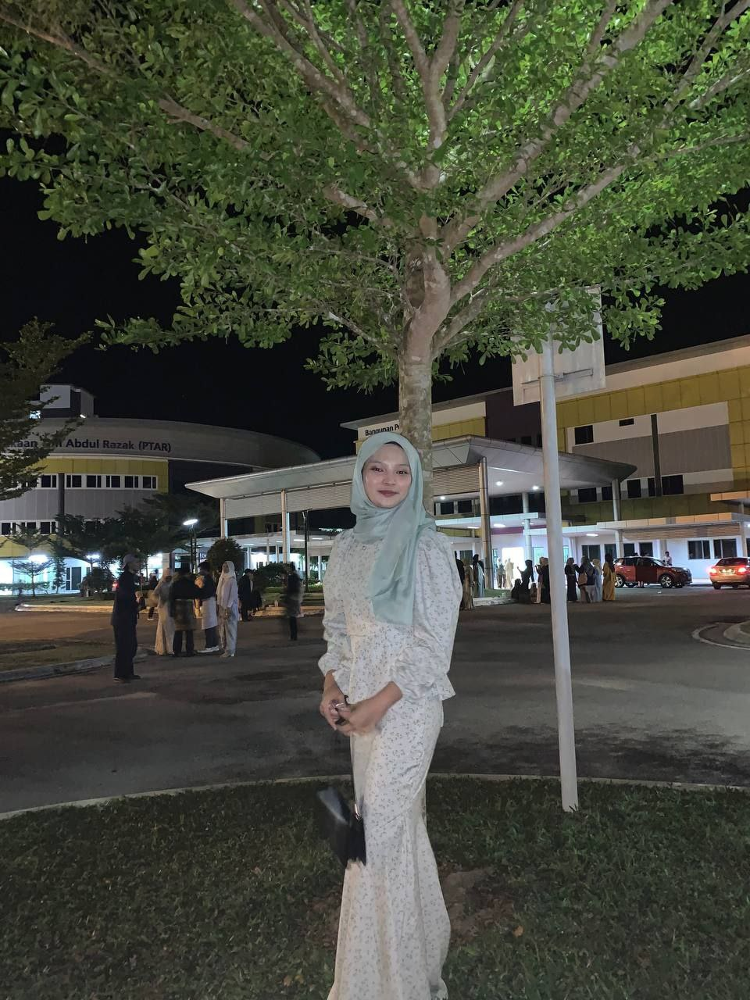

Find out more about me

First of all , let me introduce myself. My name is Nurul Ayu Hanani binti Hyukry Hanisham. Many of my close friends call me Ayu or Enot. I was born in Hospital Besar Kuala Lumpur on April 25 , 2003, and I grew up in Gombak Selangor. I am 20 years old. I have 6 siblings, 3 of them are my step-siblings. My hobby is traveling. Why i choose travelling as my hobby is i can release my stress and feeling that i keep from everyone. Listening music also one of my hobby. This can relaxing me and handle my feeling if i'm in not a good situation.
I have one ambition that I have wanted to be since childhood , the ambition is to be a policeman or police officer. I want to follow my grandfather's steps. My family also encouraged me to become a police. That's why I try my best to graduated on time and continue my degree to get a best position on plice officer. My target position is Inspector. Another reason why I choose to become a police officer is I don't want people to look down on my family and really want to work in the government because it can please my family.
I have a tough shell but on the inside I am soft. I am also a very principled person and stand strong on what is right and wrong. I am also a very straight and honest person but my friend very afraid of my face reaction.
Click below to view more.
| Name | Nurul Ayu Hanani Binti Hyukry Hanisham |
|---|---|
| Nickname | Ayu, Enot |
| Age | 20 years old |
| Gender | Female |
| Date of Birth | 25 April 2003 |
| Place of Birth | Hospital Kuala Lumpur (HKL) |
| Nationality | Malaysia |
| Religion | Islam |